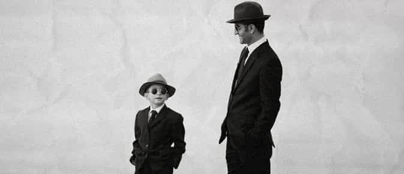
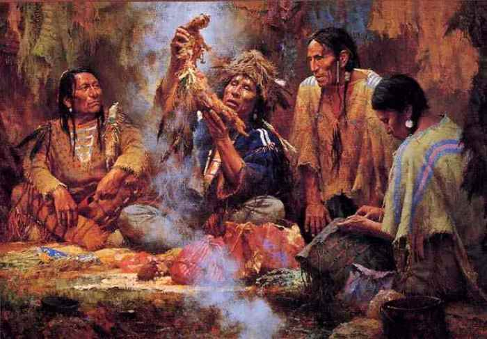

< < < Back
Game Is A Modern Rite Of Passage That Helps Turn Boys Into Men – Return Of Kings
Anyone who’s been involved in the manosphere for long enough knows about the concept of a rite of passage. For tens of thousands of years, when boys hit the age of puberty, they were forced to undergo a set of challenges.
These challenges were meant to break them down, and build them back up even stronger. These challenges were meant to test them as men, and they are collectively known as an “initiation,” or as a “rite of passage.” When a boy successfully completed the tasks laid before him, he became a man.
Our society, for the most part, lacks these rites of passage. This is, in large part, why there is such a lack of masculinity in our culture—boys are never given a chance to develop into men. We have all of these 45 year old boyish-men running around for a reason: there exists no institutionalized rite of passage in the West.
Despite this, however, I believe that learning game is a form of initiation. It contains all of the traits necessary to turn a boy into a man. It teaches boys to develop self-confidence, despite what women think of them, to become decisive and assertive, and to remain persistent and cultivate strength of will.
Death Of The Ego

One of the primary functions of a rite of passage, is that it destroys a boy’s ego. This is necessary, for in order for him to become a man, his identification with boyhood must be destroyed. In other words, he must cease to view himself as a boy, and come to view himself as a man.
This is, in a nutshell, what most of the rites of passage were designed to do—this is why many of them simulated death, in a rather belly-of-the-whale-esque fashion. One rite of passage, of the Aborigines to be specific, entailed kidnapping a young boy from his mother.
When a boy would reach the age of puberty, the men of the village would sneak into his home during the night and kidnap him; his mother would put on a big show, screaming and fighting, to make it seem realistic. The men would blindfold the boy and take him to the middle of the woods.
He would then spend the next several months undergoing challenges; he would not see a single woman for this period of time. This sudden yanking from the “mother-world,” of safety, and being thrust into the “father-world” of dangerous challenges, symbolized his death as a boy.
When the boy returned home, he would view himself as a man. He would carry himself taller, he would interact with the women differently, and he would have a new sense of purpose. In many ways, as I will soon explain, game does all of these things for the men willing to learn it.
Facing Fears

Many of these challenges that boys were forced to face involved overcoming their fears. Fear of death, fear of the unknown, and fear of failure were all overcome during these rites of passage. As an example, one Native American rite of passage involved making a boy sit, blindfolded, on a tree trunk for three days straight.
Imagine his fear as he heard the various animals during the night; the howling, the cawing, and the roaring of the animals alone would be enough to terrify even the bravest of men. Then, add in the elements of cold and wind, the bugs that must have crawled over his feet, and the fear of a rival tribe member killing him, and it becomes very apparent how brave the men of the past must have been.
Then, once three days had passed, a man of the village would come and remove the boy’s blindfold. This, again, is symbolic of his rebirth; for three days straight, he was blind and helpless. Then, his vision returned and he emerged a new man.
All throughout the rites of passage of history, whether they be of the Inuits, the Amazon tribes, or the South African tribes, there are some very common characteristics: facing your fear, being reborn, and coping with uncertainty are all critical parts of these initiations.
Why Were These Rituals Necessary?

Upon contemplation, it becomes very clear why these rituals were necessary. The world that we live in is radically different than the world that our ancestors lived in. A tribe of weak men meant extinction; there was no “military,” or “safety.” If the men could not protect the tribe, it would not be protected.
Imagine, right now, if a marauding band of 25 vandals roamed into your neighborhood. They were all extremely jacked, mean looking, and each one was carrying some sort of weapon; a baseball bat, a stick, or a crowbar. Do you think that you and your neighbors would have the balls to fight them off?
You, being a reader of ROK, may very well fight a noble fight—but your neighbors? I seriously doubt that a purple-haired, complaining, self-castrating feminist “man” would be of any use during a battle such as this.
Now, try to imagine that this sort of thing happened fairly regularly for our ancestors. It was not uncommon for neighboring tribes to frequently attack you, so it was an absolute necessity that the men be trained for battle. But, being trained for battle requires more than physical strength.
It requires ferocity, it requires strength of will, decisiveness, assertiveness, and a complete lack of fear. These are the characteristics that rites of passage were meant to breed, for without them, a tribe would go extinct.
Are These Rituals Still Necessary?

Someone might point out that we aren’t at war anymore, so these rituals aren’t necessary. Although I agree that we aren’t in a state of constant warfare anymore, I still believe that these rites of passage are extremely necessary. Here’s why.
Men and women both have distinct psychological makeups; there is no denying this, no matter how hard the Marxists cry and clamor. Men and women are different. Boys have an inherent desire to be a part of something greater than themselves, namely a tribe. Boys have an inherent desire to be welcomed into the world of men…and we aren’t getting it, because there isn’t even a world of men anymore.
The once sacred separation of the genders has been desecrated. Only a select handful of men’s organizations still exist: the manosphere, the Freemasons, and various other spiritual organizations. It used to be commonplace for gentleman’s organizations to exist everywhere, but they’ve become a thing of the past.
This is why, in large part, we’re experiencing such a crisis of masculinity; men don’t know who they are anymore. We don’t have any healthy male role models. All we’ve got is weak men who justify their weakness with feel good aphorisms. We want more, but we don’t get more.
Any man who is attuned to this can feel it; he can feel the general sense of boyishness that the adulthood of men seems to hold onto. There’s no chance for us to prove ourselves. There’s no dragons to slay, no enemies to fight off, and no fears to overcome.
And we’re suffering. We can feel it in our bones. Not only are men unnecessary, but we don’t even have opportunities to grow and develop like the men of the past. We don’t have any initiations or male guidance; no men to reassure our belonging in the tribe, no obstacles to face.
Learning Game: The New Initiation?

I believe that, although it isn’t perfect, game is a phenomenal substitute for this lack of a male initiation ritual. Game provides us with many of the characteristics that you need to be a man, and it has many of the characteristics that the old rituals of the past did:
- Destroys your ego
- Requires you to face your fears
- Forces you to be decisive, in times of uncertainty
- Develops confidence, ferocity, and a strong will
Again, obviously game isn’t perfect. One could certainly make the argument that one’s masculinity shouldn’t be contingent upon what women think, and I agree 100%. But do you know what? You may get into game for women’s approval, but any seasoned player knows that you actually STAY in the game for your own personal growth.
When men first start learning game, they get into it because their sex life isn’t what they want it to be. They think that learning game will get them girls, and it does. But something happens along the way—they start getting all of the sex that they could ever want, and they realize that game has changed them on a deeper level.
Game provides you with an outlet to overcome your anxiety, and to live life fearlessly; by consistently going out and facing your fears of rejection, you develop a certain fearless mindset that bleeds into other areas of your life.
Learning game creates a whole-personality transformation, that cannot be found anywhere else. No other hobby, outlet, or activity will change you as much as game does, aside from an actual initiation conducted by the men of the past.
Game Makes You A Man

Game will transform you from a boy into a man, for a vast number of reasons. First off, game demolishes your ego. A lot of men have this delusion that they could get any hot girl that they want, but they are forced to face reality when they actually go out and try to pull girls.
This is why so many men hate game, and can’t handle it: you’re forced to face reality very quickly, and most men can’t take this. When you start to go out and learn game, you have one of two choices:
- Accept that you suck with girls, and keep trying to improve
- Viscerally deny reality and perpetuate your delusions by never going out and experiencing rejection
Most men choose the latter. Their ego is far too precious, and they can’t handle it being challenged. Those men who do have the courage to demolish their ego, however, will end up bedding women more gorgeous than they ever imagined (take my word for it).
Second, learning game requires you to face your fears. Think of how many men have approach anxiety nowadays; do you think that this underlying anxiety might bleed into other areas of their life? Of course! So once you overcome your approach anxiety in pickup, this fearlessness will bleed into other areas of your life. In other words, you’re starting to develop a totally new personality that isn’t afraid of living life and taking risks.
Game forces you to be decisive in times of uncertainty. A lot of the time, in fact most of the time, you don’t know whether or not a girl’s friends will be okay with you. You don’t know if she has a boyfriend, you don’t know if she lives nearby, you don’t know this, you don’t know that. When it comes to game, there’s a lot of uncertainty.
This is why learning game teaches you to accept uncertainty and make take decisive action in the face of it. What other skill could be more masculine? The men of the past revered this skill, because it’s what their entire livelihood was based around.
You see a pack of deer 100 feet away; you don’t know if you can kill them or not. Should you take the risk? An enemy tribe is attacking; should you run to your hut and get a better weapon, or pick up a rock and do what you can? You’re injured and alone, but you see a nearby village; should you ask them for help? Would they kill you or heal you?
Learning to take decisive action in the face of uncertainty was a skill that every man had for millenia; his life depended on it. Now, the only way to cultivate this skill is through game or other, more extreme measures, such as fighting in a war or something (although even then, you won’t have much freedom to make decisions).
All in all, game will take you from a boy to a man. It will teach you to be confident, and to become completely detached from either rejection or acceptance from women. It will help you to develop assertiveness and social calibration.
Most importantly, however, it will teach you to overcome your fears. In the words of my favorite pickup mentor: “Learning game is an Odyssey of the mind.” It teaches you to overcome your fears, to face your lingering negative beliefs, and to grow as a man. Our society gives us no right of passage, so we’ve created our own. Go out and learn game, for it will change your life.
Read More: 6 Things Indian Guys Have To Understand When Learning Game